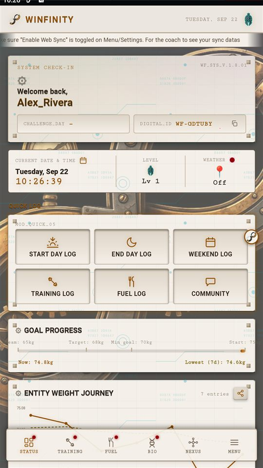

Real screenshots from the app and the live dashboard, step by step — how to find your Digital ID, turn on Web Dashboard Sync with a PIN, and use both to sign in to Winfinity Nexus on desktop.
Everything happens in two places: the Fitness Tracker app's own Menu → Settings, then wellness.winfinityfitness.com in any browser. Click any step on the right to jump straight to it.
